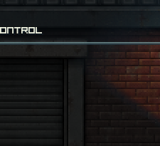

Captured evidence
Existing captures; opening this page does not run the game or create new acceptance evidence.




LOCAL BUILD
Zombie Co-op Prototype
Open play.cmdRun the existing launcher from Explorer if your browser downloads it.
C5152098D45665F98392FBFAA51CA0FA6A00E2CEAA824AF10170116834CE8371Recorded reports describe their original snapshot. Technical checks do not establish human art, gameplay or performance acceptance.
Existing captures; opening this page does not run the game or create new acceptance evidence.
